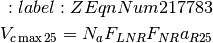
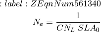
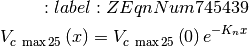
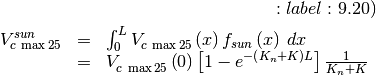
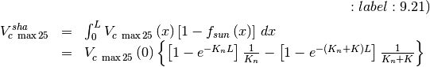
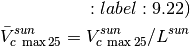
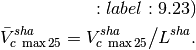
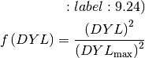

10. Photosynthetic Capacity¶
10.1. Vcmax25 and Canopy scaling¶
The maximum rate of carboxylation at 25 oC varies with foliage nitrogen concentration and specific leaf area and is calculated as in Thornton and Zimmermann (2007). At 25ºC,

where  is the area-based leaf nitrogen concentration (g N
m-2 leaf area),
is the area-based leaf nitrogen concentration (g N
m-2 leaf area),  is the fraction of leaf
nitrogen in Rubisco (g N in Rubisco g-1 N),
is the fraction of leaf
nitrogen in Rubisco (g N in Rubisco g-1 N),
 is the mass ratio of total Rubisco molecular mass
to nitrogen in Rubisco (g Rubisco g-1 N in Rubisco), and
is the mass ratio of total Rubisco molecular mass
to nitrogen in Rubisco (g Rubisco g-1 N in Rubisco), and
 is the specific activity of Rubisco (µmol
CO2 g-1 Rubisco s-1).
is calculated from mass-based leaf N concentration and
specific leaf area
is the specific activity of Rubisco (µmol
CO2 g-1 Rubisco s-1).
is calculated from mass-based leaf N concentration and
specific leaf area

where  is the leaf carbon-to-nitrogen ratio (g C
g-1 N) and
is the leaf carbon-to-nitrogen ratio (g C
g-1 N) and  is specific leaf area at the
canopy top ( m2 leaf area g-1 C ). Table 8.1
lists values of , , and
for each plant functional type. was chosen to give
is specific leaf area at the
canopy top ( m2 leaf area g-1 C ). Table 8.1
lists values of , , and
for each plant functional type. was chosen to give
 consistent with Kattge et al. (2009), as discussed
by Bonan et al. (2011, 2012). Table 8.1 lists derived values for
at the top of the canopy using .
Tropical broadleaf evergreen trees are an exception, and a higher
is used to alleviate model biases (Bonan et al.
2012).
consistent with Kattge et al. (2009), as discussed
by Bonan et al. (2011, 2012). Table 8.1 lists derived values for
at the top of the canopy using .
Tropical broadleaf evergreen trees are an exception, and a higher
is used to alleviate model biases (Bonan et al.
2012).
is calculated separately for sunlit and shaded
leaves using an exponential profile to area-based leaf nitrogen
( ), as in Bonan et al. (2011). at
cumulative leaf area index  from the canopy top scales directly
with , which decreases exponentially with greater
cumulative leaf area, so that
from the canopy top scales directly
with , which decreases exponentially with greater
cumulative leaf area, so that

where  is defined at the top of
the canopy using , and
is defined at the top of
the canopy using , and  is the decay
coefficient for nitrogen. The canopy integrated value for sunlit and
shaded leaves is
is the decay
coefficient for nitrogen. The canopy integrated value for sunlit and
shaded leaves is


and the average value for the sunlit and shaded leaves is


This integration is over all leaf area ( ) with
) with
 and
and  the direct beam
extinction coefficient (equation 4.9). Photosynthetic parameters
the direct beam
extinction coefficient (equation 4.9). Photosynthetic parameters
 ,
,  ,
,  , and
, and
 scale similarly.
scale similarly.
The value  chosen by Bonan et al. (2011) is
consistent with observationally-derived estimates for forests, mostly
tropical, and provides a gradient in Vcmax similar to
the original CLM4 specific leaf area scaling. However, Bonan et al.
(2012) showed that the sunlit/shaded canopy parameterization does not
match an explicit multi-layer canopy parameterization. The discrepancy
arises from absorption of scattered radiation by shaded leaves and can
be tuned out with higher . The model uses
chosen by Bonan et al. (2011) is
consistent with observationally-derived estimates for forests, mostly
tropical, and provides a gradient in Vcmax similar to
the original CLM4 specific leaf area scaling. However, Bonan et al.
(2012) showed that the sunlit/shaded canopy parameterization does not
match an explicit multi-layer canopy parameterization. The discrepancy
arises from absorption of scattered radiation by shaded leaves and can
be tuned out with higher . The model uses
 to match an explicit multi-layer canopy.
to match an explicit multi-layer canopy.
additionally varies with daylength ( )
using the function
)
using the function  , which introduces seasonal variation
to
, which introduces seasonal variation
to 

with  . Daylength (seconds) is
given by
. Daylength (seconds) is
given by
![:label: 9.25)
DYL=2\times 13750.9871\cos ^{-1} \left[\frac{-\sin \left(lat\right)\sin \left(decl\right)}{\cos \left(lat\right)\cos \left(decl\right)} \right]](../../_images/math/b5260e22fb2d43ff4bcb67cf1faded5cbe0c3923.png)
where  (latitude) and
(latitude) and  (declination angle) are
from section 3.3. Maximum daylength (
(declination angle) are
from section 3.3. Maximum daylength ( ) is calculated
similarly but using the maximum declination angle for present-day
orbital geometry (
) is calculated
similarly but using the maximum declination angle for present-day
orbital geometry ( 23.4667º [0.409571 radians],
positive for Northern Hemisphere latitudes and negative for Southern
Hemisphere).
23.4667º [0.409571 radians],
positive for Northern Hemisphere latitudes and negative for Southern
Hemisphere).